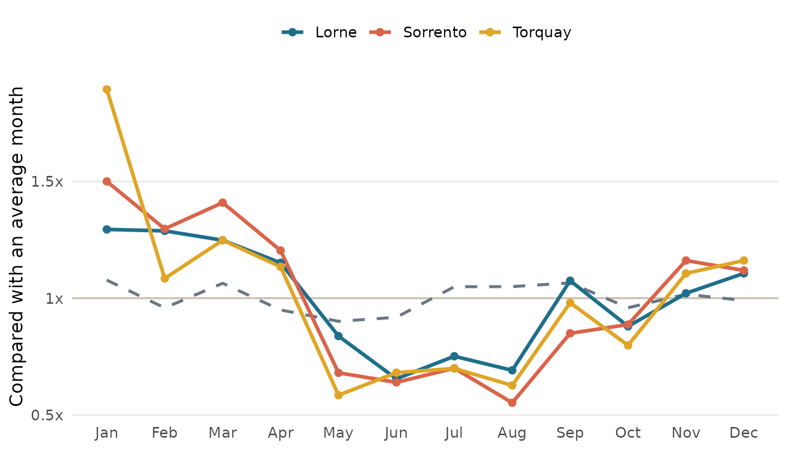
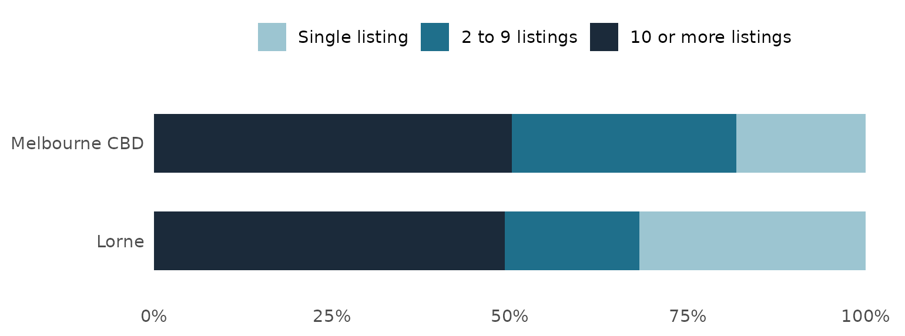
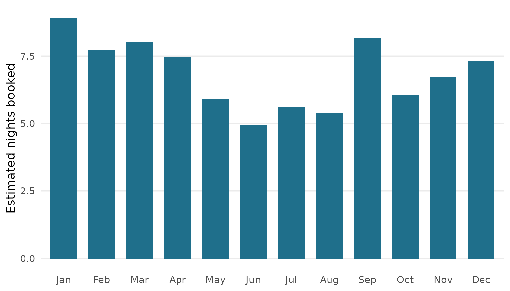

City or coast? Where a short stay in Victoria actually pays
Devaansh Gupta
Source:vignettes/city-or-coast.Rmd
city-or-coast.RmdThe problem
Picture a three-bedroom house a short walk from the beach in Lorne. On a Saturday in January it is booked months in advance, and the owner could probably charge twice the usual rate and still fill it. Now picture the same house on a wet Tuesday in July. The road is quiet, half the cafes have shortened their hours, and the calendar is empty.
Now picture a one-bedroom unit on Collins Street. It never has a January like that, but it also never has a July like that. Business travellers, concert crowds and people in town for the footy keep it ticking over most of the year.
If you are thinking about buying a place to run as an Airbnb, or switching a property you already own from a normal lease to short stays, those two pictures are the whole decision. A coastal house can earn a lot in a few months. A city unit earns less per night but more steadily. And in both places you are competing with someone, sometimes a family renting out their holiday home and sometimes a company running dozens of listings.
This post walks through the staysvic package and its app, which were built to help with that decision. Along the way it answers three questions:
- When is each place busy, and how does that compare with the CBD?
- Who runs the short stays there?
- How many booked nights would a short stay need to earn more than a normal lease?
The short version. In Lorne, the busiest month for whole-home short stays is January and the quietest is June. The busiest month is about 2.0 times as busy as the quietest. In the Melbourne CBD that gap is 1.2 times. A typical three-bedroom whole home in Lorne would need about not available booked nights a month to beat the median rent, and the estimate for a typical listing there is about 7 nights. The CBD is the steadier market, while Lorne depends much more on its busy season.
Where the evidence comes from
The package uses two public datasets, both released under the Creative Commons Attribution 4.0 licence.
Inside Airbnb (insideairbnb.com) collects every public Airbnb listing in a region every few months. This package uses the snapshot from 02 November 2026 for three Victorian regions: Melbourne, the Mornington Peninsula, and Barwon South West, which is the one that covers Geelong, the Bellarine and the Great Ocean Road. After cleaning, there are 24,253 active listings, meaning listings that had at least one guest review in the past year.
The Homes Victoria Rental Report (data.vic.gov.au) gives the median weekly rent for new leases by council area and dwelling type. This is the “normal lease” that a short stay is compared with.
Inside Airbnb only says which council area a listing is in. That is
too coarse for this question, because the Surf Coast council covers
Torquay, Anglesea and Lorne, which are very different markets. So each
listing is also matched to the nearest town centre if it sits within a
few kilometres of one. The towns are listed in
vic_places.
| Area | Active listings |
|---|---|
| Greater Melbourne | 5952 |
| Melbourne CBD | 4739 |
| Inner Melbourne | 4418 |
| Mornington Peninsula | 3144 |
| Great Ocean Road | 3126 |
| Geelong and Bellarine | 1748 |
| Yarra Valley and Dandenongs | 873 |
| Western Victoria | 253 |
Installing the package and opening the app
The package lives on GitHub. Install it once, then load it and launch the app.
# install.packages("remotes")
remotes::install_github("etc5523-2026/etc5523-assignment-4-devaansh-ops")
library(staysvic)
run_app()The app opens in your browser with four tabs. Start here explains who the app is for and defines the terms. The other three tabs each answer one of the questions above. The CBD is always on the charts as a baseline, so every town is judged against a market most people already know.
A few words first
You don’t need any background for these. Table 2 explains the terms the app uses, and the rest of the post sticks to them.
| Term | What it means |
|---|---|
| Short stay | A listing that accepts stays shorter than 28 nights. Victoria’s short stay levy uses the same line. |
| Mid stay | A listing with a minimum stay of 28 nights or more. These hosts use Airbnb more like a rental site. |
| Entire home | The guest gets the whole house or unit. |
| Active listing | A listing with at least one guest review in the last 12 months. |
| Demand | Counted with guest reviews, because Airbnb does not publish bookings. |
| Place | A town, or a council area for listings that are not near any listed town. |
Demand needs a little more explanation, because it is the number the rest of the app leans on. Guests can only review a place after they have stayed there, so a month with lots of reviews is a month with lots of stays. Not every guest writes one, so the count is always lower than the real number of stays. That is fine for spotting when a place is busy, which is what the first tab is about.
Question 1: when is it busy?
The When is it busy? tab has three controls. Pick up to four towns to compare with the CBD. Choose short stays, mid stays or both. Choose entire homes, private rooms or anything.
The chart shows each month compared with that place’s own average month. A value of 2 means twice as busy as usual and 0.5 means half as busy. This puts a small town and the whole CBD on the same scale, so you can compare their shape rather than their size. Figure 1 is the same chart, drawn for Lorne, Sorrento, Torquay.

Figure 1: Demand through the year for whole-home short stays, compared with each place’s average month. The dashed grey line is the Melbourne CBD.
In Lorne, demand peaks in January and bottoms out in June. The busiest month is about 2.0 times as busy as the quietest. The CBD’s swing is 1.2 times, so the seasonal gap in Lorne is much bigger than the CBD’s.
This is where the app earns its place over a static chart. Every town has its own rhythm, and the town a reader cares about is rarely the one a report happens to print. Swapping towns in and out, or switching from entire homes to private rooms, shows straight away whether a pattern holds.
The table under the chart sums each place up in one row: busiest month, quietest month and the swing between them.
Question 2: who runs it?
The Who runs it? tab takes one place and compares who operates its active listings with who operates them in the CBD. Hosts are sorted by how many listings they run across the three regions:
- Single listing. Usually an owner renting out their own home or holiday house.
- 2 to 9 listings. Small investors or friends-and-family managers.
- 10 or more listings. Almost always a management company.

Figure 2: Share of active listings by how many listings the host runs.
In Lorne, 32% of active listings are run by a host with just one listing, and 49% by hosts running ten or more. In the CBD those shares are 18% and 50%. Hotel rooms and serviced apartments make up 3% of Lorne’s Airbnb listings and 3% of the CBD’s.
Why does this matter to someone starting out? A market full of single hosts is one where a newcomer competes with people like themselves. A market dominated by companies means competing with professional photos, dynamic pricing and hundreds of reviews. The app also lists the biggest operators in each place by name. Only hosts with ten or more listings are named, because those are businesses. Smaller hosts are private people and stay anonymous.
One thing this tab cannot do is compare Airbnb with hotels. There is no open, current dataset of hotel bookings for Victorian towns, so the most the app can say is how much of Airbnb itself is made up of hotel rooms.
Question 3: does it pay?
The Does it pay? tab brings it together. Pick a place and a number of bedrooms. The app fills in the Homes Victoria median weekly rent for that council area, which you can type over with your own figure. A slider sets the share of each night’s price you would lose to platform fees, cleaning and management. It starts at 20 per cent.
The app then works out how many booked nights a month you would need to earn the same as a normal lease:
The bars in Figure 3 estimate how many nights a typical listing in that place was actually booked each month last year. To get from reviews to nights, the app uses the same rough rule Inside Airbnb uses: about half of guests leave a review, and a typical stay is about three nights.

Figure 3: Estimated booked nights a month for a typical whole-home listing in Lorne, against the nights a three-bedroom home would need to match the median rent (red line).
For a three-bedroom whole home in Lorne, the median nightly price is $575, based on 97 active listings. Against a weekly rent of not available (Not available), it would need about not available booked nights a month to break even. A typical listing there gets an estimated 7 nights, rising to 9 in January and falling to 5 in June.
For a one-bedroom unit in the CBD, the break-even point is about 13 nights against an estimated 10 nights for a typical listing.
The useful part is moving the sliders. Push costs from 20 to 30 per cent, or type in a rent you think is realistic, and watch the red line move. If the answer flips with a small change, the decision is closer than any single number makes it look.
When the data is thin
Some combinations simply do not have enough listings to say anything reliable. A four-bedroom home in a small town might have two listings, and a median of two prices is not much of a median. Rather than show a confident number, the app says so. Here is the note it gives for a case like that:
small <- names(sort(table(vic_listings$place[vic_listings$active])))[1]
breakeven_nights(small, bedrooms = 4)$note
#> [1] "Only 3 active 4 bedroom whole homes in Rest of Warrnambool. A median from so few listings can swing a lot, so treat this as a rough guide."The first tab does the same for places with fewer than 100 reviews, and the second warns when a place has fewer than 30 active listings.
What a would-be host should do next
| Step | What to do | Why it matters |
|---|---|---|
| 1. Compare shapes | In When is it busy?, put your town next to the CBD. | A big swing means most of the year’s money comes in a few weeks. |
| 2. Check the competition | In Who runs it?, look at the share of big operators. | Competing with companies is harder on price and reviews. |
| 3. Test the break-even | In Does it pay?, enter a rent you could really get. | The median rent is a starting point, not your property. |
| 4. Stress the costs | Move the cost slider up to 30 per cent. | Cleaning and management often cost more than people expect. |
| 5. Look at the quiet months | Compare the low bars with the red line. | Those are the months you need savings for. |
A few things the app does not support. It does not predict future bookings. It does not account for mortgage costs, council rates, insurance or the 7.5 per cent short stay levy that is added to each booking. And it does not know anything about your particular property, which might be much better or worse than the median.
Limits
Two limits matter most. First, reviews are a stand-in for bookings. The “half of guests review” rule is a rough average, and the real share could be higher in some towns and lower in others. That changes the size of the booked-nights estimate, though not the shape of the seasonal pattern. Second, Inside Airbnb publishes one year of free snapshots, and each listing’s settings are taken from the newest one. A host who changed their minimum stay during the year is counted under their current setting for every month.
Conclusion
Back to the beach house in Lorne and the unit on Collins Street. The data backs up the hunch that the coast is more seasonal than the city. Demand in Lorne swings by about 2.0 times between its best and worst months, which is much bigger than the CBD’s 1.2 times. Whether a short stay beats a normal lease comes down to whether the busy months earn enough to carry the quiet ones, and the app lets you test that for your own town, size and costs. Used that way, it will not make the decision for you, but it will show you where the decision is close.
Behind the post: how this differs from the app
This post and the app use the same functions and the same data, but they do different jobs. The post tells one story about one town. The app lets a reader tell their own.
| This post | The app | |
|---|---|---|
| Who it is for | Someone deciding whether the app is worth opening | Someone working through their own decision |
| Places | One coastal town and the CBD | Any town, up to four at once |
| Numbers | Fixed at the default settings | Change with rent, costs and bedrooms |
| Charts | Three, each answering one question | The same three, redrawn on every change |
Three choices shape the writing. A story opening makes a dry money question easier to care about. Background comes before numbers, so readers can judge them. And in a data story the headline result goes early, so people keep reading.
On the charts, each one carries a single message. Soft colours keep the page calm, and the CBD always appears as the same dashed grey line so the eye learns to read it as the baseline.
References
Inside Airbnb. n.d. “Get the Data.” https://insideairbnb.com/get-the-data/. CC BY 4.0.
Homes Victoria. n.d. “Rental Report: Quarterly Moving Annual Rents.” https://discover.data.vic.gov.au/dataset/rental-report-quarterly-moving-annual-rents-by-suburb. CC BY 4.0.
State Revenue Office Victoria. n.d. “Understanding the Short Stay Levy.” https://www.sro.vic.gov.au/owning-property/short-stay-levy/understanding-short-stay-levy.